Climate Normals and Averages describe the average climate conditions specific to a particular location. These can be downloaded from Environment and Climate Change Canada using the normals_dl() function.
First we’ll load the weathercan package for downloading the data and the tidyr package for unnesting the data (see below).
To download climate normals, we’ll first find the stations we’re interested in using the stations_search() function. We’ll use the normals_only = TRUE argument to filter to only stations with available climate normals.
stations_search("Winnipeg", normals_only = TRUE)
## # A tibble: 1 x 11
## prov station_name station_id climate_id WMO_id TC_id lat lon elev tz normals
## <chr> <chr> <dbl> <chr> <dbl> <chr> <dbl> <dbl> <dbl> <chr> <lgl>
## 1 MB WINNIPEG RICHA… 3698 5023222 71852 YWG 49.9 -97.2 239. Etc/… TRUELet’s compare the climate normals from these three stations in Winnipeg, MB. Note that unlike the weather_dl() function, the normals_dl() function requires climate_id not station_id. By default the normals are downloaded for the years “1981-2010” (currently the only normals available).
n <- normals_dl(climate_ids = c("502S001", "5023222", "5023262"))
## Not all stations have climate normals available (climate ids: 502S001, 5023262)
n## # A tibble: 1 x 6
## prov station_name climate_id meets_wmo normals frost
## <chr> <chr> <chr> <lgl> <list> <list>
## 1 MB WINNIPEG RICHARDSON INT'L… 5023222 TRUE <tibble [13 × 197… <tibble [7 × 8…Because there are two different types of climate normals (weather measurements and first/last frost dates), the data are nested as two different datasets. We can see that the Airport (Richardson Int’l) has the most data with 197 average weather measurements as well as first/last frost dates. The other two weather stations have fewer weather measurements and no frost data available.
We can also see that only one of the three stations has data quality sufficient to meet the WMO standards for temperature and precipitation (i.e. both these measurements have code >= A). See the ECCC calculations document for more details.
To extract either data set we can use the unnest() function from the tidyr package.
Note that this extracts the measurements for all three stations (in the case of the normals data frame), but not all measurements are available for each station
normals## # A tibble: 13 x 202
## prov station_name climate_id meets_wmo period temp_daily_aver… temp_daily_aver…
## <chr> <chr> <chr> <lgl> <fct> <dbl> <chr>
## 1 MB WINNIPEG RI… 5023222 TRUE Jan -16.4 A
## 2 MB WINNIPEG RI… 5023222 TRUE Feb -13.2 A
## 3 MB WINNIPEG RI… 5023222 TRUE Mar -5.8 A
## 4 MB WINNIPEG RI… 5023222 TRUE Apr 4.4 A
## 5 MB WINNIPEG RI… 5023222 TRUE May 11.6 A
## 6 MB WINNIPEG RI… 5023222 TRUE Jun 17 A
## 7 MB WINNIPEG RI… 5023222 TRUE Jul 19.7 A
## 8 MB WINNIPEG RI… 5023222 TRUE Aug 18.8 A
## 9 MB WINNIPEG RI… 5023222 TRUE Sep 12.7 A
## 10 MB WINNIPEG RI… 5023222 TRUE Oct 5 A
## 11 MB WINNIPEG RI… 5023222 TRUE Nov -4.9 A
## 12 MB WINNIPEG RI… 5023222 TRUE Dec -13.2 A
## 13 MB WINNIPEG RI… 5023222 TRUE Year 3 A
## # … with 195 more variablesTo visualize missing data we can use the gg_miss_var() function from the naniar package.
select(normals, -contains("_code")) %>% # Remove '_code' columns gg_miss_var(facet = station_name)
suppressWarnings({select(normals, -contains("_code")) %>% # Remove '_code' columns gg_miss_var(facet = station_name)})

Let’s take a look at the frost data.
## Rows: 7
## Columns: 12
## $ prov <chr> "MB", "MB", "MB", "MB", "MB", "MB", "MB"
## $ station_name <chr> "WINNIPEG RICHARDSON INT'L A", "WINNIPEG …
## $ climate_id <chr> "5023222", "5023222", "5023222", "5023222…
## $ meets_wmo <lgl> TRUE, TRUE, TRUE, TRUE, TRUE, TRUE, TRUE
## $ frost_code <chr> "A", "A", "A", "A", "A", "A", "A"
## $ date_first_fall_frost <dbl> 265, 265, 265, 265, 265, 265, 265
## $ date_last_spring_frost <dbl> 143, 143, 143, 143, 143, 143, 143
## $ length_frost_free <dbl> 121, 121, 121, 121, 121, 121, 121
## $ prob <chr> "10%", "25%", "33%", "50%", "66%", "75%",…
## $ prob_first_fall_temp_below_0_on_date <dbl> 255, 259, 261, 265, 268, 270, 276
## $ prob_length_frost_free <dbl> 96, 109, 114, 119, 126, 129, 141
## $ prob_last_spring_temp_below_0_on_date <dbl> 158, 152, 148, 144, 140, 137, 129The include data frame, normals_measurements contains a list of stations with their corresponding measurements. Be aware that this data might be out of date!
normals_measurements## # A tibble: 4,561 x 4
## prov station_name climate_id measurement
## <chr> <chr> <chr> <chr>
## 1 AB ANDREW 3010234 frost_code
## 2 AB ANDREW 3010234 date_first_fall_frost
## 3 AB ANDREW 3010234 date_last_spring_frost
## 4 AB ANDREW 3010234 length_frost_free
## 5 AB ANDREW 3010234 prob
## 6 AB ANDREW 3010234 Probability of first temperature in fall of 0 C or lower…
## 7 AB ANDREW 3010234 prob_length_frost_free
## 8 AB ANDREW 3010234 prob_last_spring_temp_below_0_on_date
## 9 AB BROWNFIELD 3010890 frost_code
## 10 AB BROWNFIELD 3010890 date_first_fall_frost
## # … with 4,551 more rowsFor example, if you wanted all climate_ids for stations that have data on soil temperature
normals_measurements %>% filter(stringr::str_detect(measurement, "soil")) %>% pull(climate_id) %>% unique()
## character(0)